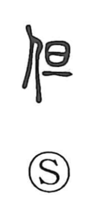

但

Uncategorized
Kun: tadashi, tada | On: tan
but ・ however ・ provided that ・ only
Explanation
A phono-semantic character built with the person radical on the left and 旦 on the right as the phonetic, indicating the On reading tan. Early sources such as the Shuowen link this graph to the idea of baring the shoulder (tan), as in 袒, showing how 旦 functions as a shared phonetic in words read tan. From that phonetic value the character was later borrowed to write the native sense tada, “just; only.” In Japanese it is read tadashi in legal and expository style to introduce exceptions or conditions, as in tadashigaki, a proviso clause.